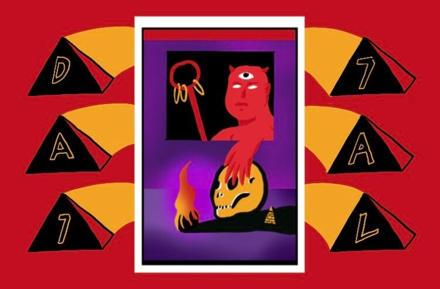

Kita layak curiga kenapa kejahatan manusia bisa sebegini parahnya.
Ngurang-ngurasin jobdesc Dajjal aja nih.

Dua kasus kejahatan seksual yang melibatkan dosen UNRI sudah membuat
banyak orang tak habis pikir. Kok bisa tenaga pengajar dengan latar
belakang pendidikan bagus justru punya otak yang perlu dibilas tujuh
kali? Akibat ramainya kasus ini, media sosial gaduh dan beberapa
mahasiswa turut menggunjingkan bahwa mereka juga pernah “digoda” oleh
dosen pembimbing sendiri. Wah, wah, nggak tertolong.
Ada juga kasus kejahatan seksual yang melibatkan seorang aparat, yang
katanya perlu disebut sebagai oknum, yaitu Bripda Randy Bagus. Pilu,
sebab Novia Widyasari, korban sekaligus mantan pacar si oknum,
memutuskan mengakhiri hidup di samping pusara ayahnya karena tak kuat
menangggung segala beban. Novia Widyasari pernah dihamili, lalu aborsi,
dan Bripda Randy enggan menikahi. Novia sempat melapor, tapi tak mempan
dan tak mendapat keadilan.
Tenang, Saudara-saudara, kita belum sampai pada pembahasan jobdesc
Dajjal karena masih banyak kasus yang akan membuat darah kita mendidih.
Usai kasus Bripda Rendy Bagus viral, polisi kemudian menyeriusi hal ini
dan berjanji akan memproses yang bersangkutan secara hukum. Jangan
senang dulu karena masalah ini perlu dikawal. Lha, masih ingat kasus
pelecehan seksual yang terjadi di KPI Pusat kan? Itu saja belum selesai.
PR kita banyak, Bung.